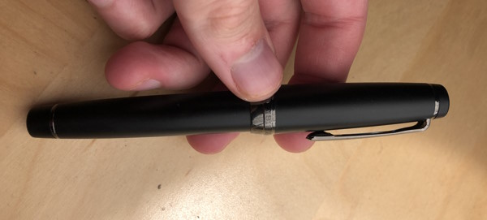
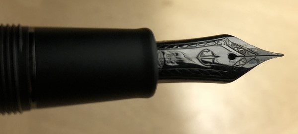

I figured I'd make this post just as a quick update on my life and what's been going on.
I have recently accepted an offer to work as a Software Support Agent for Sonoran Software Systems in Prescott,
I hope I can learn a lot and gain some basic experience in the tech industry so that I can eventually move on
to working in systems or software developement.
In other news, I have placed two decent sized tea orders in the last week, one is a big Shincha order from Thes
du Japon, and the other is a wide variety of Chinese teas and a new gaiwan from Nannuoshan. I went for such a
variety because for the last year or two I have been almost exclusively drinking Japanese tea (with the exception
of puerh). As such, I have almost no Chinese teas (that aren't puerh) in my collection so I figured I'd hit a wide
range of types to replenish it.
Another new hobby of mine is fountain pens. I recieved a Sailor Pro Gear Imperial Black fountain pen with a fine nib
as a graduation present from my parents. So far, I love it. It looks super sleek and writes incredibly smoothly whilst
also providing some feedback. I have found I barely need to press at all and it just glides along the paper like butter.


22 May 2023